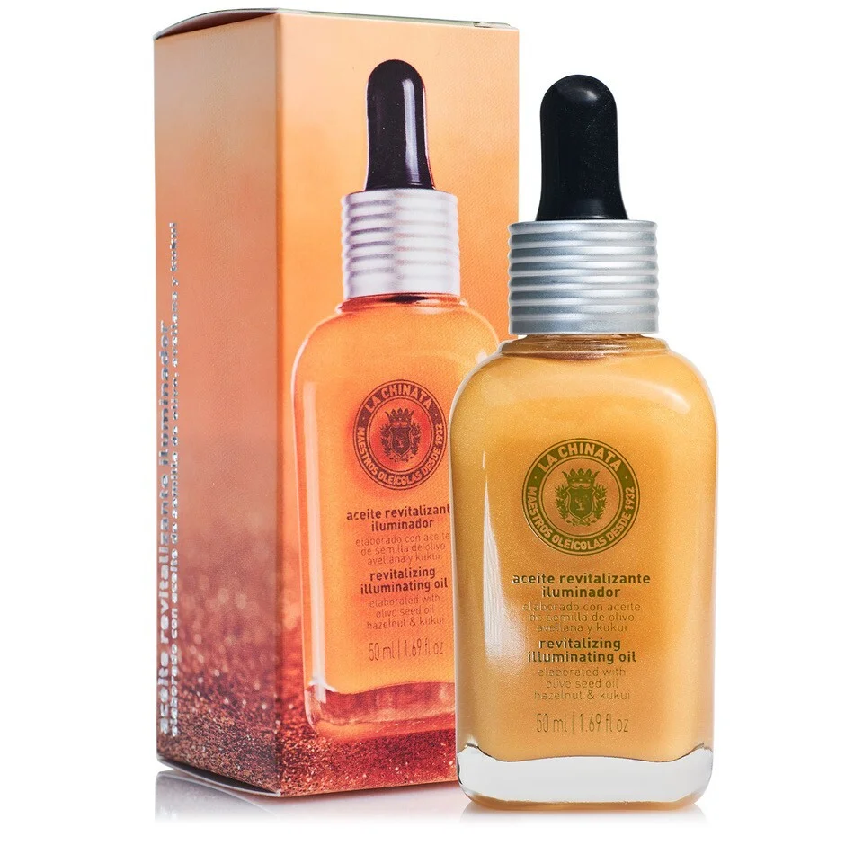

Cosmetic Made in Spain
聯繫我們
產品展示
LA CHINATA REVITALIZING ILLUMINATING OIL FOR DAILY

112 Kr 50ml
The Revitalizing Illuminating Day Oil is an ideal elixir to reduce the appearance of spots on the skin, repair it and reduce irritation caused by external factors such as the sun or skin conditions such as dermatitis, leaving a skin with more vitality and prepared to avoid damage caused by sunlight, pollution and oxidative stress among others. This Revitalizing Oil is made with hazelnut oil, which has antioxidant and moisturizing properties; rosehip oil, with regenerating, healing, and reducing the appearance of spots on the skin; olive seed oil, with moisturizing and antioxidant qualities; Aloe vera, anti-inflammatory and repairing, and kukui oil, very rich in omega 3, which helps skin repair and is perfect for reducing skin irritation caused by the sun, dermatitis, etc. It is an easily absorbed oil that leaves the skin hydrated, luminous, smooth and radiant. In addition, it contains active ingredients that keep it hydrated and protected throughout the day. It has a very fresh and pleasant aroma thanks to its content in essential oil of peppermint and mandarin.
Vida Copyright © 2024 All rights reserved